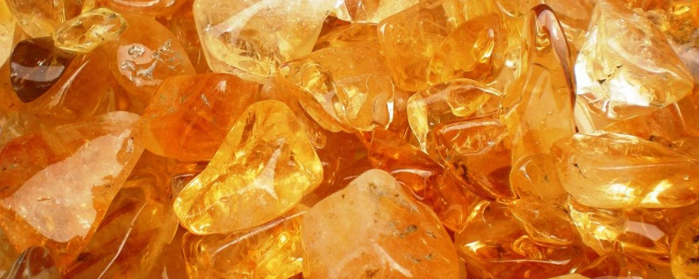
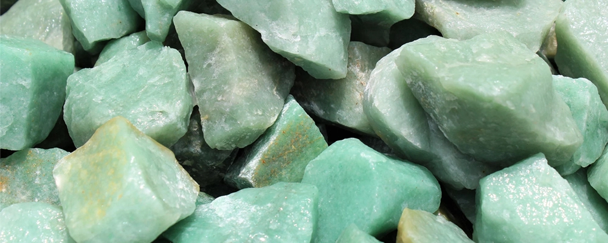
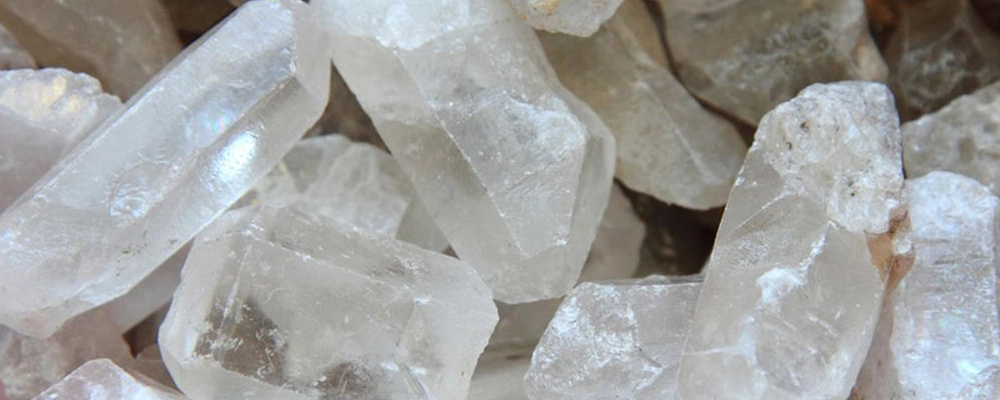
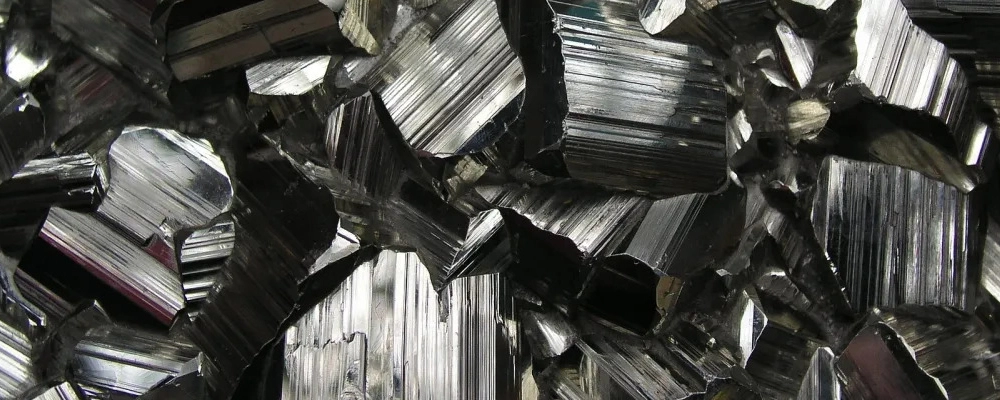
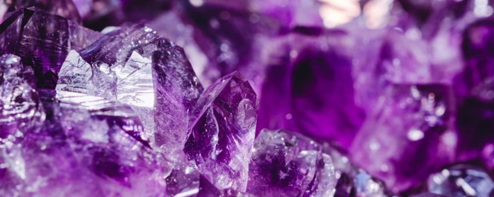
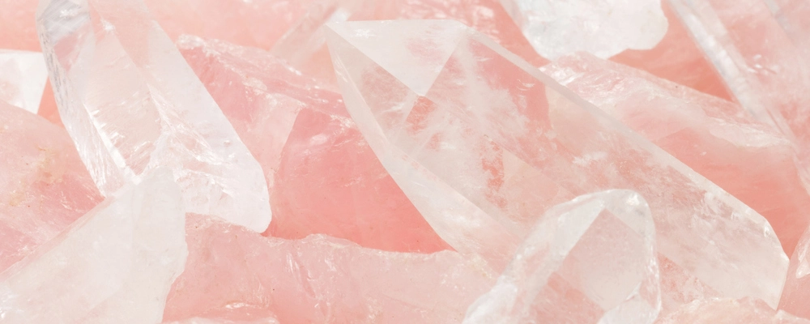
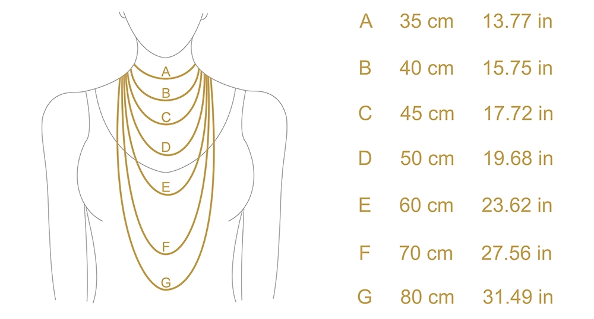

Nuestros accesorios son hechos a mano y con amor, por eso necesitan de
ciertos cuidados para su durabilidad.
Te recomendamos evitar la exposición de cualquiera de nuestros productos a perfumes, lociones,
fijador, agua con agregados de cloro o agua de mar. Algunos de los accesorios están hechos con
materiales un poco mas sensibles que otros, por eso el contacto con los químicos mencionados puede
provocar un deterioro de las piezas.
Limpieza
Mezclá un poco de jabón con agua semi-caliente y frotá el artículo con un
cepillo de dientes suave. Los cepillos de dientes son ideales para limpiar joyas que tienen rincones
de difícil acceso. Si la suciedad persiste, realizá el mismo proceso en agua limpia.
Un paño específico para pulir la plata es una gran herramienta para
hacer que tus joyas brillen de nuevo en caso de que se hayan oscurecido con el tiempo. De todas
formas, esta técnica no eliminará cualquier arañazo o golpe que la pieza pueda tener.
Si notás que cambió el tono de tus accesorios de plata, te recomendamos realizar una limpieza de los
mismos con bicarbonato de sodio. En este video te explicamos cómo:
Guardado
No guardes tus accesorios en un baño o en sitios húmedos. Guardalos siempre
lejos de cualquier exposición a la luz solar y de sitios cálidos.
Nunca uses recipientes de goma, ya que generarán un deslustre acelerado de las piezas.
Idealmente podes guardar tus accesorios en un joyero acolchado o en una bolsa resistente al
deslustre.
También se pueden guardar en bolsitas individuales de plástico (polietileno) con cierre hermético.
Colgar tus accesorios es otra buena idea de guardado, sobre todo para los collares, evitando nudos
en las cadenas. En este video, te mostramos una forma fácil para organizarlos:
GUÍA DE METALES
Acero Quirúrgico
El acero quirúrgico es un metal de elevada pureza, resistente y duro, con lo cual no se deforma, no
se raya ni se abolla. Todo esto lo hace perfecto para el uso diario. No se mancha, no se oxida
con el agua ni se pone oscuro, por lo que su color permanece inalterable. Recomendamos igualmente
todos los cuidados posibles para asegurar la durabilidad que lo caracteriza.
El material es hipoalergénico, esto significa que tiene una probabilidad muy baja de generar
reacciones. Si a pesar de esto observas algún tipo de reacción alérgica al material, recomendamos
suspender su uso.
Plata
La plata es un metal que posee multiples virtudes, es un material bastante maleable, blando y
brillante una vez pulido. El tipo de plata más utilizado en joyeria, y el que justamente nosotros
utilizamos, es la plata 925. Para comprobar que un accesorio es de este material, verás grabada la
numeración 925 en la pieza.
Algunas personas pueden llegar a presentar reacciones alérgicas a este material. En caso de
detectarlo, suspendé su uso.
Por sus características, la plata se oxida con facilidad al entrar en contacto con otros materiales.
Por eso es recomendable la limpieza y mantenimiento de las piezas habitualmente.
CRISTALES
Citrino

No hay quien deje de sentirse atraído por su deslumbrante energía solar. Trabaja básica
y directamente con las emociones primarias. Su tarea es la de despejar las energías mentales
y emocionales estancadas en el plexo solar, las cuales disminuyen el poder personal, la capacidad
de decidir, de elegir y sentir.
Al trabajar conscientemente con este cristal maestro, se modifican los estados mentales asociados al
ego, con sus mecanismos de defensa, justificación y resistencia que inducen al desgano, la pereza y
el estancamiento. Además se lo puede utilizar para atraer la abundancia.
Aventurina Verde

La energía calmante de la Aventurina verde equilibria el cuerpo emocional, guiando a uno hacia la
armonía interior. Calma el nerviosismo, la ira, la irritación y ayuda a disolver el estrés diario.
Nos anima a ver las dificultades en la vida como algo pasajero, como una oportunidad para crecer en
una nueva dirección y para tomar todas las cosas con calma. Es una piedra de reafirmación, especialmente
en tiempos de cambio o agitación y puede ser el ancla emocional que uno necesita para permanecer
estable y firmemente arraigado.
Es conocida como la "piedra de la oportunidad". No es simplemente un atractor de suerte, sino una
que alinea las condiciones para que la "oportunidad" sea inevitable. Esta piedra libera viejos patrones,
hábitos y decepciones para que pueda tener lugar un nuevo crecimiento.
Aporta optimismo lo que permite avanzar con confianza y aceptar el cambio. Aumenta la creatividad y
la motivación y fomenta la perseverancia a la hora de superar los obstáculos de la vida. También
refuerza la propia decisión y amplifica las cualidades de liderazgo.
Cuarzo Cristal

Esta facultado para otorgar paz y tranquilidad a hogares que viven un mal clima emocional. Todo tipo
de relaciones que tenga el portador de un Cuarzo Cristal se verá favorecido con armonía.
También favorece una mejor concentración, lo que es bueno para meditar y así elevar nuestro nivel
espiritual. Es bueno también para estudiantes de modo que logren conseguir mejor rendimiento en sus
estudios.
Ayuda a liberar posibles bloqueos físicos que tengas en el cuerpo, ayuda a las energías naturales
como los puntos meridianos, los puntos de reflexología. Equilibra la energía de estos puntos físicos tanto en
positivo como en negativo. El Cuarzo va a transmitirte sobre todo equilibrio. Es una inyección de
positivismo para tu mente, su poderoso campo energético reforzará el nuestro para cambiar la
capacidad espiritual.
Turmalina

Se caracterizan por analizar y extraer de forma rápida las energías negativas del cuerpo. Su poder
energético y protector no permitirá que seas blanco de la energía densa o negativa del otro. Nos
conecta con el chakra base o raíz para asentar la energía enraizandonos o bien induciendo la
negatividad a la tierra para sacarla del cuerpo.
Incrementa la vitalidad, ayuda a tomar contacto con la tierra o aceptar la encarnación con lo que te
ha tocado y desarrollarte en este mundo dispuesto a trascender evitando tensión, estrés, celos o
inseguridades.
Amatista

Esta piedra se usa para serenar y relajar la mente, ya que posee la virtud de evitar la dispersión
de ésta y el consumo excesivo de su energía a través de pensamientos recurrentes y negativos.
Trabajando con ella, activarás el ojo del alma, desarrollarás la percepción y la intuición. Estarás
más alerta, más sincronizado con tu sentir. Si has perdido a un ser amado, conéctate con la
Amatista, porque esta piedra del alma te brindará paz y sosiego.
Cuando sientas que tus pensamientos se apoderan de ti y no puedes liberarte de ellos, utiliza una
Amatista en el tercer ojo, en la mano o debajo de la almohada y todo el nerviosismo, la ansiedad, el
agotamiento, el estrés y la queja van a ir menguando e irás entrando en otra realidad, más calma y
serena.
Cuarzo Rosa

Reemplaza con suavidad la energía negativa, obsoleta o viciada por otras vibraciones más amorosas y
tiernas que le devuelven al corazón la confianza para volver a sentir libremente y a expresarse a
tráves de los sentimientos.
El Cuarzo Rosa nos muestra y nos enseña el respeto y la honestidad para con nosotros mismos, nos
dice que esta es una experiencia personal que no depende de otros ni del afuera. Nos conecta con
nuestros sentimientos profundos, nos lleva al encuentro con el alma; nos da confianza, paciencia y
nos ayuda en la expresividad y armonía con el entorno.
Nos ayuda a aprender a amarnos y aceptarnos tal cual somos. Nos trae la capacidad de perdonar y
perdonarnos y la paz interior que necesitamos para poner en acción nuestros verdaderos sentimientos
e ir sanando el desamor, el abandono, las penas largas o eternas esperas, los vacios sentidos y
poder liberar todo el dolor acumulado, vaciarnos de la culpa y el resentimiento.
No importa de donde proviene o cuál fue la emoción que ha generado esos sentimientos, el Cuarzo Rosa
cicatriza las heridas y nos abre camino que nos conduce a la esencia del verdadero amor.
GUÍA DE TALLES
Anillos
Para saber cuál es el talle correcto de nuestros anillos, te recomendamos guiarte por uno
que ya tengas y medir su diámetro interno con una regla.
Otro método, es medir con un hilo o cinta el contorno total de tu dedo, hacer una marca
donde se unen y luego medir el largo con una regla.
Una vez que tengas la medida, ya sea diámetro o contorno total del dedo, podés guiarte
por nuestra tabla para determinar el talle:
TALLE
CONTORNO DE DEDO
DIÁMETRO DE ANILLO
mm
inch
mm
inch
3.0
44.2
1.74
14.07
0.55
3.5
45.5
1.79
14.48
0.57
4.0
46.8
1.84
14.88
0.59
4.5
48
1.89
15.29
0.60
5.0
49.3
1.94
15.70
0.62
5.5
50.6
1.99
16.10
0.63
6.0
51.9
2.04
16.51
0.65
6.5
53.1
2.09
16.92
0.66
7.0
54.4
2.14
17.32
0.68
7.5
55.7
2.19
17.73
0.70
8.0
57
2.24
18.14
0.71
8.5
58.3
2.29
18.54
0.73
9.0
59.5
2.34
18.95
0.75
9.5
60.8
2.39
19.35
0.76
10.0
62.1
2.44
19.76
0.78
10.5
63.4
2.49
20.17
0.79
11.0
64.4
2.54
20.57
0.81
11.5
65.9
2.59
20.98
0.83
12.0
66.6
2.65
21.39
0.84
12.5
68.5
2.70
21.79
0.86
13.0
69.7
2.75
22.20
0.87
13.5
71
2.80
22.61
0.89
14.0
72.3
2.85
23.01
0.91
14.5
73.6
2.90
23.42
0.92
Collares
Los largos de nuestros collares varían según el modelo. En la descripción de cada
producto detallamos la medida total del mismo.
Te dejamos una guía de los distintos largos disponibles para que puedas tener una referencia:

Pulseras
Cada uno de los modelos de pulseras que tenemos disponibles, varía en su talle. En la descripción de
cada producto detallamos la medida total de las mismas.
Para saber cual es el talle adecuado de pulsera, medí el contorno total
de tu muñeca. Podes utilizar un hilo o cinta, hacer una marca donde se unen y luego
medir el largo con una regla.
Te recomendamos agregar entre 1 y 2cm al tamaño de tu muñeca para elegir el talle y evitar que
la pulsera quede demasiado ajustada. Una vez que tengas la medida, podés guiarte por nuestra tabla
para determinar el talle: